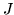

Tie the items in itemList and assign them to the specified
macro name. This command applies to any item type but
all of the items in itemList must be of the same type.
The detailed method of tying depends on the item type as follows:
- state(s)
- the state with the largest total value of gConst
in stream 1 (indicating broad variances) and the minimum number of
defunct mixture weights (see MU command) is selected from the
item list and all states are tied to this typical state.
- transitions(t)
- all transition matrices in the item list are
tied to the last in the list.
- mixture(m)
- all mixture components in the item list are tied
to the last in the list.
- mean(u)
- the average vector of all the mean vectors
in the item list is calculated and all the means are tied to this
average vector.
- variance(v)
- a vector is constructed for which each element
is the maximum of the corresponding elements from the set of
variance vectors to be tied. All of the variances are then tied
to this maximum vector.
- covariance(i)
- all covariance matrices in the item list are tied
to the last in the list.
- xform(x)
- all transform matrices in the item list are tied
to the last in the list.
- duration(d)
- all duration vectors in the item list are tied
to the last in the list.
- stream weights(w)
- all stream weight vectors in the item
list are tied to the last in the list.
- pdf(p)
- as noted earlier, pdf's are tied to create tied
mixture sets rather than to create a shared pdf. The procedure
for tying pdf's is as follows
- All mixtures from all pdf's in the item list are collected
together in order of mixture weight.
- If the number of mixtures exceeds the join size  [see the
Join (JO) command above], then all but the first mixtures
are discarded.
- If the number of mixtures is less than , then the
mixture with the largest weight is repeatedly split until
there are exactly mixture components. The split procedure
used is the same as for the MixUp (MU) command
described above.
- All pdf's in the item list are made to share all
mixture components. The weight for each mixture is set
proportional to the log likelihood of the mean vector of
that mixture with respect to the original pdf.
- Finally, all mixture weights below the floor set by the
Join command are raised to the floor value and all of the
mixture weights are renormalised.
Back to HTK site
See front page for HTK Authors